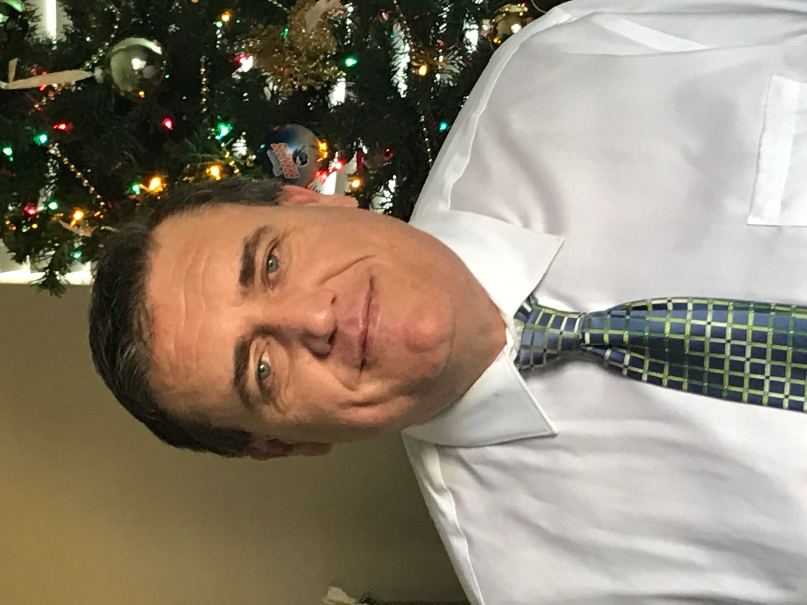

A Graduate Student with valuable technical and IT support experience; recently earning a master’s
degree in Cybersecurity. I have gained knowledge in many areas of enterprise security, risk
management, infrastructure, vulnerabilities and controls. I am currently working on a Professional
Certificate for full-stack development at University of Arizona. My strengths include leading team projects,
practiced speaker, excellent troubleshooting skills, polished communication skills, both verbal and written.
I have the ability to grasp new concepts quickly. I was named to the "Wall of Fame" for outstanding
troubleshooting skills at Nextel Communications.
I am an Integrity-driven, eager new professional
excited to start a new career. I’m hoping to parlay my education and experience into a valued position
with a successful company; to grow with and make a positive impact on that company, and the community.
Whether that takes me into development, or into the enterprise security side, I want to make a valuable
contribution; not only to my organization, but to the world.
Willing to relocate.